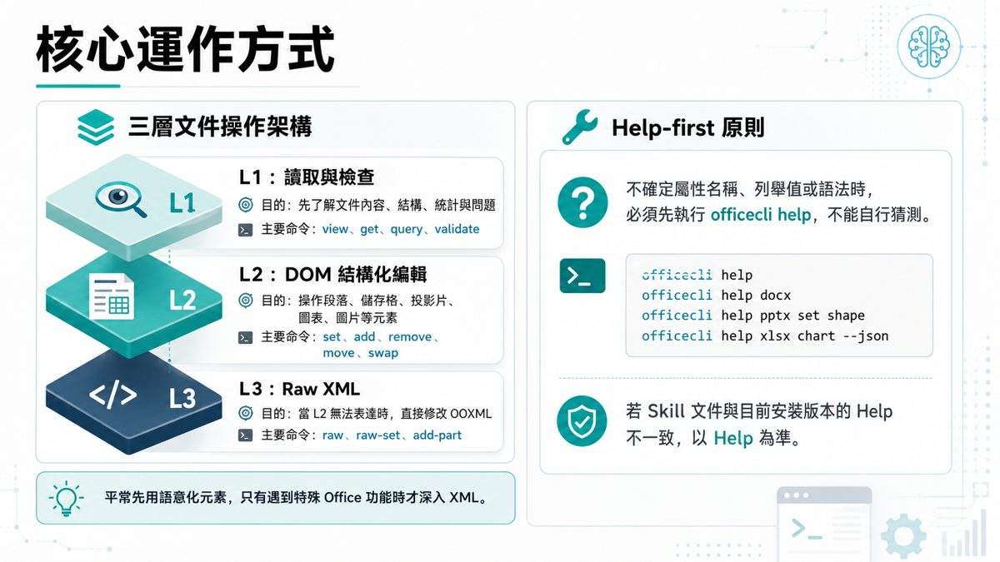
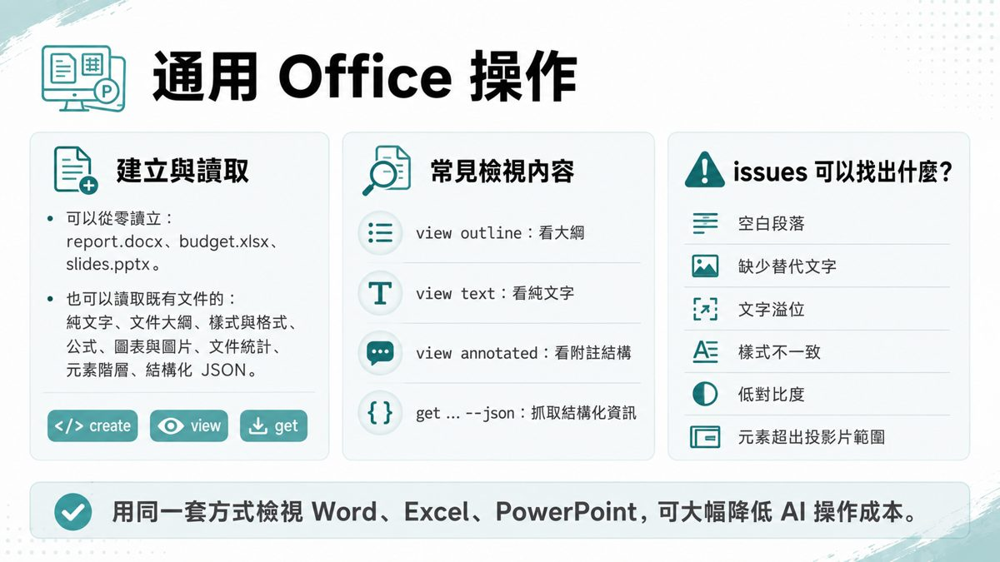
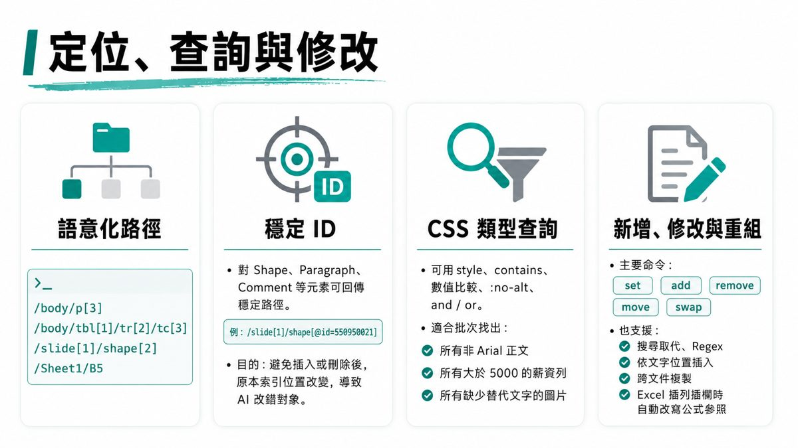
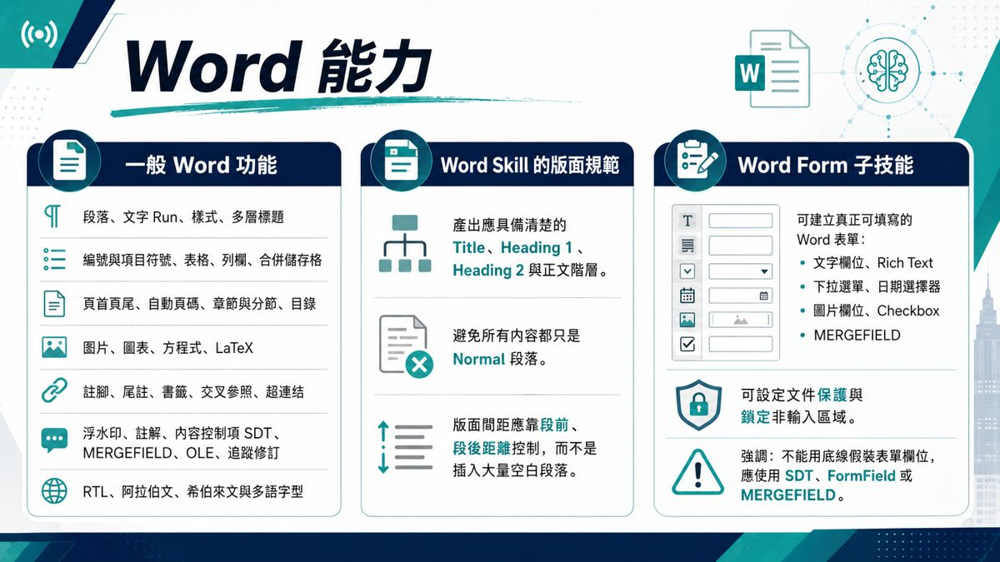
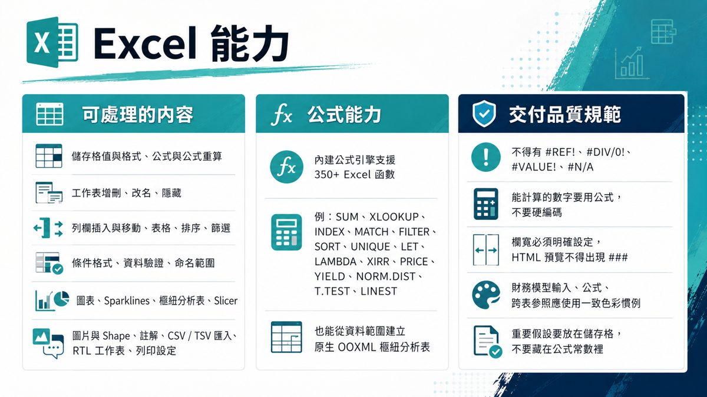
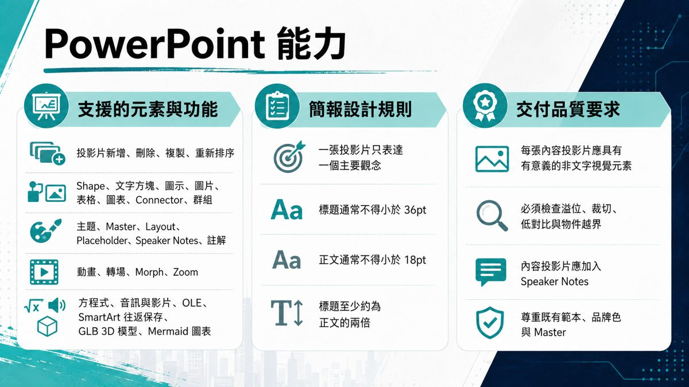
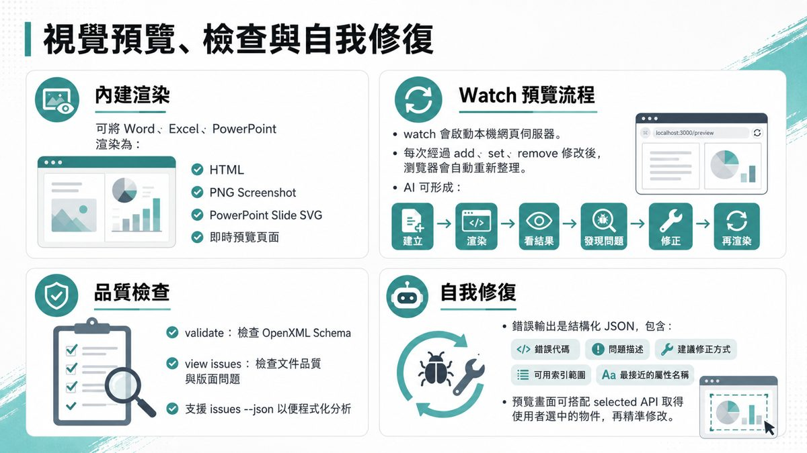
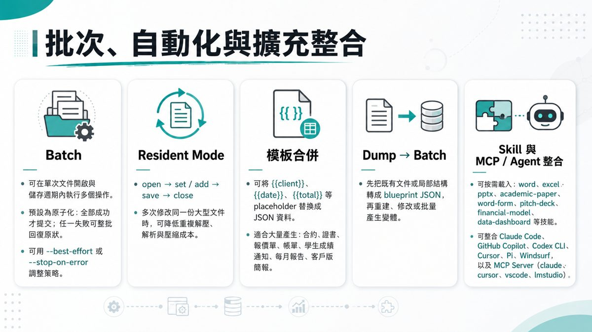
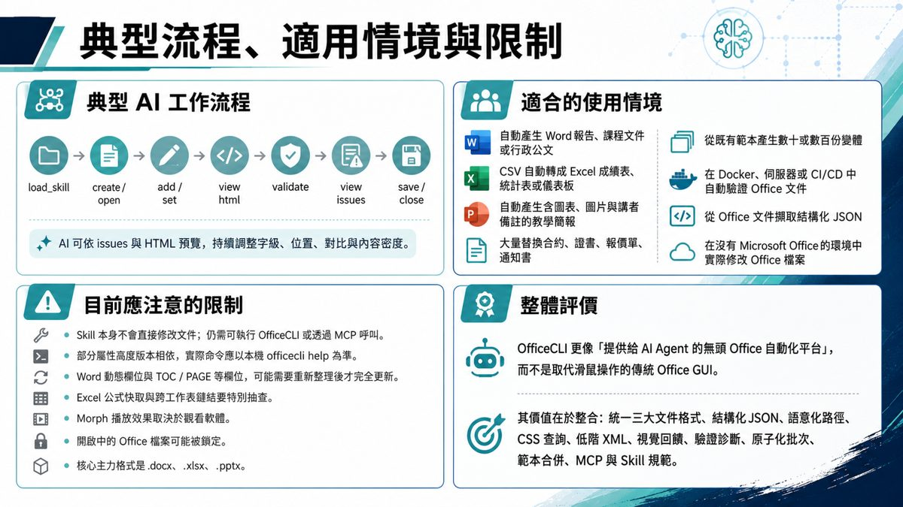

0. 課程資訊與教材
| 課程名稱 | EP47「Skill 可以在那裡用？Chat、Work、Agent（以 Office Skill 為例）」 |
|---|---|
| 頻道 | 生成式 AI 應用電台・晨學講堂 |
| 教材 | 官方課程簡報 21 頁（圖像型簡報，逐頁原圖全收錄）；另附補充文件《OfficeCLI Office 文件自動化功能指南》完整文字版 |
| 實例工具 | iOfficeAI／OfficeCLI（github.com/iOfficeAI/OfficeCLI）——單一執行檔，支援 macOS／Linux／Windows／x64／ARM64，不需安裝 Microsoft Office |
| 一句話先懂 | Skill 不是「到處都能用」：同一個 Skill 檔案，在 Chat 模式只能討論、Work 模式可以處理檔案、Codex 模式能完整執行，選對模式 Skill 才會真正發揮作用。 |
💡 本集簡報為圖像型投影片；下載原始 pptx → 取出 21 頁投影片原圖 → 逐頁親眼判讀並整理重點 → 原圖直接嵌入本頁。內容為真實課程內容。
1. Skill 的四種使用模式
簡報 2｜學生問問題 → 老師回答的對話式開場。
| 模式 | 適合情境 |
|---|---|
| 💬 Chat 模式 | 快速對話與即時解答；使用 Skill 提升回答品質與專業度；適合單次查詢、靈感發想 |
| 📊 Work 模式 | 處理文件、表格與資料；使用 Skill 協助整理、分析與產出內容；適合系統性任務與資料處理 |
| 🤖 Agent 模式 | 自動執行多步驟任務；使用 Skill 串接工具與流程；適合自動化、任務型工作 |
| 📑 ChatGPT in PPT | 在 PPT 中直接使用 AI；使用 Skill 快速生成簡報內容與圖表；適合簡報製作與視覺化呈現 |
「不論在哪種模式，選對 Skill 就能事半功倍！」
—— 簡報 2 小提醒
2. OfficeCLI Skill 是什麼
- Skill 不是 Office 編輯器，也不是單純提示詞，而是讓 AI 正確操控 OfficeCLI 的「操作手冊與品質規範」。
- 典型觸發範圍：建立、分析、校對、檢查格式、加入圖表，以及修改 Word、Excel、PowerPoint 文件。
- 專案為自包含單一執行檔：不需安裝 Microsoft Office，也不需額外安裝 .NET Runtime；支援 macOS、Linux、Windows、x64、ARM64。
- 兩個層次：
SKILL.md（說明何時啟用、如何安裝、使用哪些命令、如何做品質檢查、遇錯時如何自我修正）＋officecli執行檔（真正負責讀取、建立、修改 .docx／.xlsx／.pptx）。
3. 安裝方式與模式限制
officecli --help 測試是否安裝成功。| 模式 | 能否使用 OfficeCLI Skill |
|---|---|
| ① Chat 模式 | ❌ 無法使用——Chat 模式無法執行外部指令或操作檔案 |
| ② Work 模式 | ✅ 可以使用——Work 模式支援外部工具整合，可用 OfficeCLI Skill 來處理 Office 檔案 |
| ③ Codex 模式 | ✅ 可以使用——Codex 可直接在終端機執行指令，可以完整使用 OfficeCLI 的所有功能 |
⚠️ 小提醒：若要在 Chat 模式中使用，請切換至 Work 或 Codex 模式，才能啟用 OfficeCLI Skill。
4. 核心運作方式

三層文件操作架構
- L1：讀取與檢查——目的：先了解文件內容、結構、統計與問題；主要命令：
view、get、query、validate。 - L2：DOM 結構化編輯——目的：操作段落、儲存格、投影片、圖表、圖片等元素；主要命令：
set、add、remove、move、swap。 - L3：Raw XML——目的：當 L2 無法表達時，直接修改 OOXML；主要命令：
raw、raw-set、add-part。
💡 平常先用語意化元素，只有遇到特殊 Office 功能時才深入 XML。
Help-first 原則
不確定屬性名稱、列舉值或語法時，必須先執行 officecli help，不能自行猜測。若 Skill 文件與目前安裝版本的 Help 不一致，以 Help 為準。
HELP 指令範例officecli help
officecli help docx
officecli help pptx set shape
officecli help xlsx chart --json
5. 通用 Office 操作＋定位查詢修改


- 建立與讀取：可以從零建立 report.docx、budget.xlsx、slides.pptx；也可讀取既有文件的純文字、大綱、樣式格式、公式、圖表圖片、文件統計、元素階層、結構化 JSON。三個核心指令：
create／view／get。 - 常見檢視內容：
view outline（看大綱）、view text（看純文字）、view annotated（看附註結構）、get ... --json（抓取結構化資訊）。 - issues 可以找出：空白段落、缺少替代文字、文字溢位、樣式不一致、低對比度、元素超出投影片範圍。
- 定位查詢：語意化路徑（如
/body/p[3]、/slide[1]/shape[2]）、穩定 ID（對 Shape／Paragraph／Comment 等元素回傳穩定路徑，避免插入或刪除後索引改變導致 AI 改錯對象）、CSS 類型查詢（可用 style、contains、數值比較、:no-alt、and/or，適合批次找出所有非 Arial 正文、所有大於 5000 的薪資列等）。 - 新增、修改與重組：主要命令
set／add／remove／move／swap，也支援搜尋取代、Regex、依文字位置插入、跨文件複製、Excel 插列插欄時自動改寫公式參照。
✅ 用同一套方式檢視 Word、Excel、PowerPoint，可大幅降低 AI 操作成本。
6. Word／Excel／PowerPoint 三大能力
Word 能力

- 一般功能：段落／文字 Run／樣式、多層標題、編號與項目符號、表格列欄合併儲存格、頁首頁尾、自動頁碼與目錄、圖片圖表方程式 LaTeX、註腳尾註書籤交叉參照超連結、浮水印註解 SDT／MERGEFIELD／OLE／追蹤修訂、RTL 與多語字型。
- 版面規範：產出應有清楚的 Title／Heading 1／Heading 2 與正文階層；避免所有內容都只是 Normal 段落；版面間距靠段前段後距離控制，而非插入大量空白段落。
- Word Form 子技能：文字欄位、Rich Text、下拉選單、日期選擇器、圖片欄位、Checkbox、MERGEFIELD；可設定文件保護與鎖定非輸入區域；不能用底線「＿＿＿＿」假裝表單欄位，應使用 SDT、FormField 或 MERGEFIELD。
Excel 能力

- 可處理內容：儲存格值與格式、公式與公式重算、工作表增刪改名隱藏、列欄插入移動、表格排序篩選、條件格式資料驗證命名範圍、圖表 Sparklines 樞紐分析表 Slicer、圖片 Shape 註解、CSV/TSV 匯入、RTL 工作表與列印設定。
- 公式能力：內建公式引擎支援 350+ Excel 函數（如 SUM、XLOOKUP、INDEX、MATCH、FILTER、SORT、UNIQUE、LET、LAMBDA、XIRR、PRICE、YIELD、NORM.DIST、T.TEST、LINEST），也能從資料範圍建立原生 OOXML 樞紐分析表。
- 交付品質規範：不得有 #REF!、#DIV/0!、#VALUE!、#N/A；可計算的數字要用公式，不要硬編碼；欄寬必須明確設定，HTML 預覽不得出現 ###；財務模型跨表參照應使用一致色彩慣例；重要假設要放在儲存格內，不要藏在公式常數裡。
PowerPoint 能力

- 支援元素：投影片新增刪除複製重排、Shape／文字方塊／圖示／圖片／表格／圖表／Connector／群組、主題 Master Layout Placeholder Speaker Notes 註解、動畫轉場 Morph Zoom、方程式音訊影片 OLE SmartArt 往返保存 GLB 3D 模型、Mermaid 圖表自動轉可編輯 Shape 或圖片。
- 簡報設計規則：一張投影片只表達一個主要觀念；標題通常不得小於 36pt、正文不得小於 18pt；標題字級至少約為正文的兩倍。
- 交付品質要求：每張內容投影片應具有意義的非文字視覺元素；必須檢查溢位、裁切、低對比與物件越界；應加入 Speaker Notes；尊重既有範本、品牌色與 Master。
7. 視覺預覽、檢查與自我修復

- 內建渲染：可將 Word、Excel、PowerPoint 渲染為 HTML、PNG Screenshot、PowerPoint Slide SVG、即時預覽頁面。
- Watch 預覽流程：
watch會啟動本機網頁伺服器；每次經過 add、set、remove 修改後瀏覽器會自動重新整理；AI 可形成「建立 → 渲染 → 看結果 → 發現問題 → 修正 → 再渲染」的循環。 - 品質檢查：
validate檢查 OpenXML Schema；view issues檢查文件品質與版面問題；支援issues --json以便程式化分析。 - 自我修復：錯誤輸出是結構化 JSON，包含錯誤代碼、問題描述、建議修正方式、可用索引範圍、最接近的屬性名稱；預覽畫面可搭配 selected API 取得使用者選中的物件，再精準修改。
8. 批次、自動化與擴充整合

| 項目 | 說明 |
|---|---|
| Batch | 可在單次文件開啟與儲存週期內執行多個操作；預設為原子性：全部成功才提交，任一失敗可整批回復原狀；可用 --best-effort 或 --stop-on-error 調整策略。 |
| Resident Mode | open → set/add → save → close；多次修改同一份大型文件時，可降低重複解壓與解析成本。 |
| 模板合併 | 可將 {{client}}、{{date}}、{{total}} 等 placeholder 替換成 JSON 資料，適合大量產生合約、證書、報價單、帳單、學生成績通知、每月報告、客戶版簡報。 |
| Dump → Batch | 先把既有文件或局部結構轉成 blueprint JSON，再重建、修改或批量產生變體。 |
| Skill 與 MCP／Agent 整合 | 可按需載入 word、excel、pptx、academic-paper、word-form、pitch-deck、financial-model、data-dashboard 等技能；可整合 Claude Code、GitHub Copilot、Codex CLI、Cursor、Pi、Windsurf，以及 MCP Server（claude、cursor、vscode、lmstudio）。 |
9. 典型流程、適用情境與限制

- load_skill
- create／open
- add／set
- view html
- validate
- view issues
- save／close
AI 可依 issues 與 HTML 預覽，持續調整字級、位置、對比與內容密度。
| 面向 | 內容 |
|---|---|
| 適合的使用情境 | 自動產生 Word 報告／課程文件／行政公文；CSV 自動轉成 Excel 成績表或儀表板；自動產生含圖表、圖片與講者備註的教學簡報；大量替換合約、證書、報價單、通知書；從既有範本產生數十或數百份變體；在 Docker、伺服器或 CI/CD 中自動驗證 Office 文件；從 Office 文件擷取結構化 JSON；在沒有 Microsoft Office 的環境中實際修改 Office 檔案 |
| 目前應注意的限制 | Skill 本身不會直接修改文件，仍需執行 OfficeCLI 或透過 MCP 呼叫；部分屬性高度版本相依，實際命令應以本機 officecli help 為準；Word 動態欄位與 TOC／PAGE 等欄位，可能需要重新整理後才完全更新；Excel 公式快取與跨工作表鏈結要特別抽查；Morph 播放效果取決於觀看軟體；開啟中的 Office 檔案可能被鎖定；核心主力格式是 .docx、.xlsx、.pptx |
| 整體評價 | OfficeCLI 更像「提供給 AI Agent 的無頭 Office 自動化平台」，而不是取代滑鼠操作的傳統 Office GUI。其價值在於整合：統一三大文件格式、結構化 JSON、語意化路徑、CSS 查詢、低階 XML、視覺回饋、驗證診斷、原子化批次、範本合併、MCP 與 Skill 規範。 |
10. 三模式情境對照：怎麼選
Chat 模式：能幫忙討論，不能直接執行
「Chat 可以教你怎麼做、幫你寫指令、幫你排錯；但不能在這裡直接完成 OfficeCLI 任務。」
—— 簡報 15 一句話總結
Work 模式：適合結構化、可重複處理的 Office 任務
Codex 模式：正式執行與批次自動化最適合
「Codex 很強，但因為會真的執行 OfficeCLI，所以更需要確認環境、權限與指令正確性。」
—— 簡報 21 一句話總結
11. 重點整理
- Skill 不是到處都能用：同一個 Skill，Chat／Work／Codex 三種模式能力天差地遠。
- Chat＝討論：問安裝方式、整理需求、寫指令草稿，但不能直接執行。
- Work＝一般工作流程：能處理 Office 檔案任務，適合搭配 Skill 做文件整理。
- Codex＝正式執行：可直接跑終端指令，適合批次、自動化與整合，但要先確認環境、權限與指令正確性。
- OfficeCLI 的核心價值：把 Word／Excel／PowerPoint 統一成同一套讀取、查詢、修改、驗證、渲染的操作方式，讓 AI Agent 能安全、可驗證地自動化處理 Office 文件。
- 建議流程：Chat 釐清需求 → Work／Codex 執行 → 回到 Chat 解釋與優化。
12. 資料來源與製作說明
- 原始教材：EP47「Skill 可以在那裡用？Chat、Work、Agent（以 Office Skill 為例）」官方課程簡報 21 頁（圖像型），另附補充文件《OfficeCLI Office 文件自動化功能指南》完整文字版；均為 anyone-reader 權限、公開可下載。
- 製作方式：本集簡報為圖像型投影片；下載原始 pptx → 取出 21 頁投影片原圖 → 逐頁親眼判讀並整理重點 → 對照補充文件核對細節（Word／Excel／PowerPoint 能力段落逐字比對）→ 原圖直接嵌入本頁。內容為真實課程內容，非推測改寫。
- 誠實聲明：本集資料夾未附獨立錄影，示範操作畫面與逐字稿時間碼暫缺，本頁以簡報實錄與補充文件為準；如日後取得錄影可再補入現場示範細節。OfficeCLI 相關指令與功能會隨版本更新，實際操作請以當下安裝版本的
officecli help為準。 - 介面參考：版型沿用本站 EP29–EP46 課堂筆記的乾淨白底編輯風格。